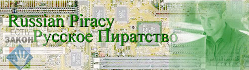

Page index / courses
lesson3.htm

Lesson Three
Specialization
Researching a Topic or an Area
This week you will select your own topic--it may be a theme (software/hardware, music, cases against pirates, etc.) or an area (like Moscow) for an eventual research project/report on an issue of interest to you.
1. Assignment: Search-identify-read-take notes-outline (6 hrs)
- Search either by theme or word, use both English and Russian search engines. You might, for example, search out information on the economic impact of piracy or Russian piracy legislation, or on a geographical area, like the cities of Moscow or St. Petersburg.
- Determine your specific research interest and then identify at least five sites/articles in Russian devoted to that issue. Save and annotate the sites as you did in Lesson one
- Read and translate from Russian into English the titles and the key thematic (first and last) sentences.
- Outline in Russian the issue(s)/problem(s), the data/findings/arguments, and your solution/conclusion.
- Submit your list of sites, original texts, translation, and outline as a Word or HTML document
That's way too hard!!
- Search and identify five sites that are in both English and Russian.
- Annotate them based on the quality of the English language version.
- Compare to and describe the Russian language resources.
- Are there direct translations of key words and documents, or are they different?
- (Don't be reluctant to use a dictionary!)
- Select and prepare a topic for your own paper.
- Use four English language sources and one in Russian.
- Outline in English the issue(s)/problem(s), the data/findings/arguments, and your solution/conclusion.
- Submit your list of sites, original texts, the translation of the title and first and last sentences of each parargraph from your Russian text, and outline as a Word or HTML document